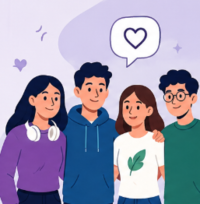

Comprometidos con la salud digital
Somos un proyecto dedicado a informar y crear conciencia sobre la nomofobia, una dependencia cada vez más común hacia los teléfonos celulares. Nuestro propósito es ayudar a que las personas comprendan cómo el uso excesivo de la tecnología puede afectar la salud física, emocional y social.
A través de información clara, recomendaciones y recursos educativos buscamos fomentar hábitos digitales responsables. Consideramos que la tecnología debe utilizarse como una herramienta que facilite la vida cotidiana, sin llegar a convertirse en una necesidad que genere ansiedad o preocupación constante.
Nuestro compromiso es promover un equilibrio entre el mundo digital y las actividades diarias, impulsando una convivencia más saludable con la tecnología y contribuyendo al bienestar de estudiantes, familias y comunidad en general.